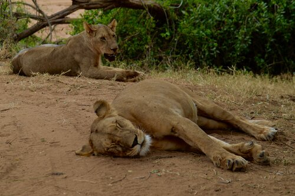
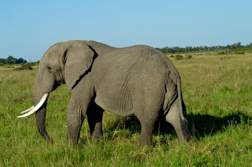
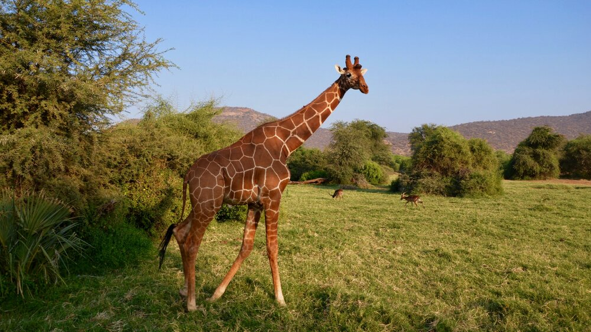

Featuring
Sleepy lionesses in the heat of Samburu National Park, Northern Kenya

Handsome bull elephant in the Masai Mara.

Alex Walker’s Serian. Goregous, safari-chic tented camp in Mara North Conservancy.
KENYA
Overview
Kenya is situated on the equator on the East African Coast. The striking thing about Kenya is that I could show you 10 different photos of different regions and parks and you wouldn’t believe they are all the same country. The varied landscape, altitude, climate and eco-systems is astounding and makes for an incredible Safari. The local Kenyans of which there are 44 different tribes are incredibly friendly, diverse and welcoming to wageni [visitors in swahili]. The famous Masai Mara which is the Kenyan side of the Mara-Serengeti eco-system is home to the annual Great Migration of millions of wildebeest and Zebra, a true spectacle and top safari experience.
[Striking reticulated Giraffe in Northern Kenya. This subspecies of Giraffe are only found in Northern Kenya, Somalia and Ethiopia.]
WILDLIFE IN KENYA
Kenya’s wildlife is renowned for its diversity and populations of large mammals such as Lion, Cheetah, Leopards, Hippo and Elephants. The big 5 reside in most of the larger parks, as well as the smaller lesser known game reserves and conservancies. Aside from the big 5, you can expect to see other rare and endemic species. Your game drives in this beautiful country will be filled with exciting game viewing. The Masai Mara is perhaps the most popular park due to the Great Migration and the eco-system’s dense population of big cats and plains game and is definitely worth visiting at the right time of year.
TENTED CAMPS AND SAFARI LODGES
From gorgeous tented camps in the Masai Mara to rustic luxury lodges in the North overlooking plateaus and rivers, the hospitality in Kenya is special. The places I will send you to are either places I have been to myself, or are sister camps to places I know and trust are the best of the best. Kenya is safari central for a reason, and I will make sure to get you to the places that go above and beyond your expectations.